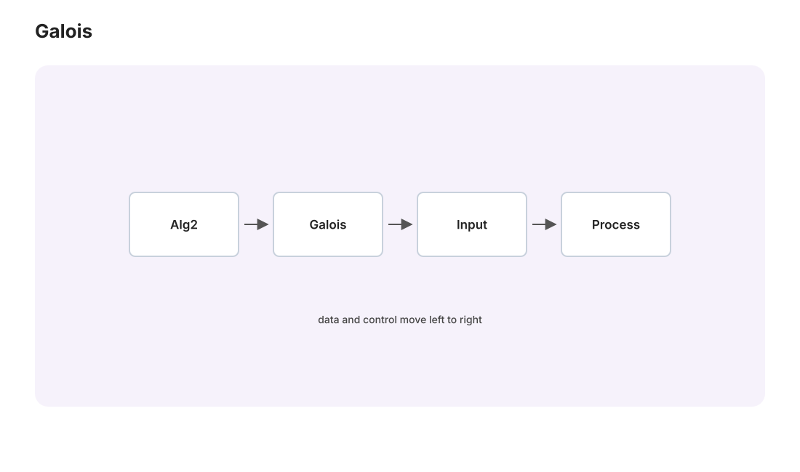

本页目录
代数进阶 II · Galois 对应
对标：Dummit & Foote §13–14 / Artin §16 ｜ 前置：本科抽代 II（域扩张、极小多项式）、alg2-01 Galois 理论的主定理：域扩张的中间域 ⟷ Galois 群的子群，一一反序对应——"解方程的可能性"被翻译成"群的结构"（at-02 覆盖空间对应的代数原型）。本页把对应立起来并配齐工作例；不可解性的引爆留给收官页。

学习层：谁固定谁，格就倒过来
1. 具体谜题：一个子群究竟“看不见”什么？
把 \(K/F\) 想成一组带有对称动作的对象。子群 \(H\) 允许的动作越多，能被所有动作同时保留下来的量就越少；因此不动域
会随着 \(H\) 变大而变小。这个“动作越多，留下的量越少”就是反序的直觉。
先在 \(K=\mathbb Q(a,b)\)、\(a=\sqrt2\)、\(b=\sqrt3\) 中试一行：\(\sigma(a)=-a,\sigma(b)=b\)。如果 \(H=\langle\sigma\rangle\)，\(a\) 被翻转而 \(b\) 被保留，所以猜 \(K^H=\mathbb Q(b)\)；同时 \(|H|=2\)，故 \([K:K^H]=2\)，而 \([K^H:\mathbb Q]=[G:H]=2\)。实验要做的是把这条局部直觉扩展成全部子群、全部固定域和全部次数证书。
在 \(x^3-2\) 的分裂域中，三根
被 \(S_3\) 置换。这里“固定一个根、交换另外两个根”的对换子群会留下一个三次根域；而 \(A_3\) 固定的是 \(\mathbb Q(\omega)\)。先猜一猜：哪个子群的固定域是实根域？它为什么不是正规扩张？
2. 预测门：先写答案，再打开账本
不要先看下方实验的证书。对每一行预测固定域、指数和正规性；提交后，界面才显示对应格与商群信息。
| 情境 | 预测 \(K^H\) | 预测 \([G:H]=[K^H:F]\) | 预测正规性与商群 |
|---|---|---|---|
| \(V_4\)，\(H=\langle\sigma\rangle\) | ？ | ？ | ？ |
| \(S_3\)，\(H=A_3\) | ？ | ？ | ？ |
| \(S_3\)，\(H=\langle(12)\rangle\) | ？ | ？ | ？ |
| \(E=\mathbb Q(\sqrt[3]2)/\mathbb Q\) 直接套定理 | ？ | ？ | ？ |
3. 最小模型：两张格、三本账
对有限 Galois 扩张 \(K/F\)，实验只显示三条可以逐项核对的账：
- 包含账：\(H_1\subseteq H_2\) 时 \(K^{H_2}\subseteq K^{H_1}\)；图的左右两张格用英文节点标记，选中一项会同时高亮子群和固定域。
- 次数账：\(|H|=[K:K^H]\)，\([G:H]=[K^H:F]\)，而 \(|G|=[K:F]\)。因此指数不是一个孤立的群论数字，它就是中间域的扩张次数。
- 正规性账：\(H\trianglelefteq G\) 时才有群商 \(G/H\)，并且 \(K^H/F\) 正规；非正规时界面给出共轭见证，而不是伪造一个商群。
操作顺序是：选择 \(V_4\) 或 \(S_3\)，先完成预测门；再逐项选择子群，观察固定域、\(|H|\)、\([G:H]\)、正规性和商群证书；最后用图和静态表反查一个练习。模型只枚举本页两个有限 Galois 扩张，不是任意多项式求解器或通用 CAS。
JavaScript 失效时的静态后备：以下表格就是完整实验账本。记 \(a=\sqrt2,b=\sqrt3\)，\(\alpha=\sqrt[3]2\)，\(\omega^3=1\) 且 \(\omega\ne1\)。
例 A：\(K=\mathbb Q(\sqrt2,\sqrt3)\)，\(G=V_4\)。 群元素全部是
| 元素 | 对 \((a,b)\) 的作用 | 元素阶 |
|---|---|---|
| \(e\) | \((a,b)\mapsto(a,b)\) | 1 |
| \(\sigma\) | \((a,b)\mapsto(-a,b)\) | 2 |
| \(\tau\) | \((a,b)\mapsto(a,-b)\) | 2 |
| \(\sigma\tau\) | \((a,b)\mapsto(-a,-b)\) | 2 |
| 子群 \(H\)（全部元素） | \(K^H\) | \(|H|\) | \([G:H]=[K^H:\mathbb Q]\) | 正规性；商群 | |---|---|---:|---:|---| | \(\{e\}\) | \(K=\mathbb Q(a,b)\) | 1 | 4 | 是；\(V_4\) | | \(\langle\sigma\rangle=\{e,\sigma\}\) | \(\mathbb Q(b)=\mathbb Q(\sqrt3)\) | 2 | 2 | 是；\(C_2\) | | \(\langle\tau\rangle=\{e,\tau\}\) | \(\mathbb Q(a)=\mathbb Q(\sqrt2)\) | 2 | 2 | 是；\(C_2\) | | \(\langle\sigma\tau\rangle=\{e,\sigma\tau\}\) | \(\mathbb Q(ab)=\mathbb Q(\sqrt6)\) | 2 | 2 | 是；\(C_2\) | | \(V_4=\{e,\sigma,\tau,\sigma\tau\}\) | \(\mathbb Q\) | 4 | 1 | 是；\(1\) |
\(V_4\) 交换，所以每个子群正规；这就是四行商群证书的共同理由。子群格的包含方向与固定域格的包含方向相反：\(V_4\supset\langle\sigma\rangle\supset\{e\}\) 对应 \(\mathbb Q\subset\mathbb Q(\sqrt3)\subset K\)。
例 B：\(K=\mathbb Q(\alpha,\omega)\)，\(G=S_3\)。 令 \(\alpha_1=\alpha,\alpha_2=\omega\alpha,\alpha_3=\omega^2\alpha\)；六个群元素全部是
| 元素 | 在 \((\alpha_1,\alpha_2,\alpha_3)\) 上的置换 | 元素阶 |
|---|---|---|
| \(e\) | \(e\) | 1 |
| \(r\) | \((123)\) | 3 |
| \(r^2\) | \((132)\) | 3 |
| \(t_{12}\) | \((12)\) | 2 |
| \(t_{13}\) | \((13)\) | 2 |
| \(t_{23}\) | \((23)\) | 2 |
| 子群 \(H\)（全部元素） | \(K^H\) | \(|H|\) | \([S_3:H]=[K^H:\mathbb Q]\) | 正规性；商群证书 | |---|---|---:|---:|---| | \(\{e\}\) | \(K=\mathbb Q(\alpha,\omega)\) | 1 | 6 | 是；\(S_3\) | | \(\langle t_{12}\rangle=\{e,t_{12}\}\) | \(\mathbb Q(\alpha_3)=\mathbb Q(\omega^2\alpha)\) | 2 | 3 | 否；\(r\langle t_{12}\rangle r^{-1}=\langle t_{23}\rangle\) | | \(\langle t_{13}\rangle=\{e,t_{13}\}\) | \(\mathbb Q(\alpha_2)=\mathbb Q(\omega\alpha)\) | 2 | 3 | 否；\(r\langle t_{13}\rangle r^{-1}=\langle t_{12}\rangle\) | | \(\langle t_{23}\rangle=\{e,t_{23}\}\) | \(\mathbb Q(\alpha_1)=\mathbb Q(\alpha)\) | 2 | 3 | 否；\(r\langle t_{23}\rangle r^{-1}=\langle t_{13}\rangle\) | | \(A_3=\{e,r,r^2\}\) | \(\mathbb Q(\omega)\) | 3 | 2 | 是；\(A_3=\ker(\operatorname{sgn})\)，\(S_3/A_3\cong C_2\) | | \(S_3=\{e,r,r^2,t_{12},t_{13},t_{23}\}\) | \(\mathbb Q\) | 6 | 1 | 是；\(1\) |
失败边界：为什么不能直接对 \(\mathbb Q(\sqrt[3]2)/\mathbb Q\) 套用？ 令 \(E=\mathbb Q(\alpha)\)。它的极小多项式 \(x^3-2\) 在 \(E\) 中只有实根 \(\alpha\)，另外两个根 \(\omega\alpha,\omega^2\alpha\) 不在 \(E\)；所以 \(E/\mathbb Q\) 可分但不正规，不是 Galois 扩张。事实上 \(\operatorname{Aut}_{\mathbb Q}(E)\) 只有恒等，而 \(\mathbb Q\subset E\) 已有两个中间端点，不能把它当作一个阶为 \([E:\mathbb Q]=3\) 的 Galois 群来建立一一对应。正确做法是进入正规闭包 \(K=\mathbb Q(\alpha,\omega)\)，在 \(K/\mathbb Q\) 的 \(S_3\) 对应中，\(E=K^{\langle t_{23}\rangle}\)；这里应用的是大扩张的对应，不是 \(E/\mathbb Q\) 的对应。
4. 误区与边界：定理的门槛不能省
- 有限 Galois 是前提。 对任意有限扩张只写 \(G=\operatorname{Aut}_F(K)\)，不能自动得到中间域和子群的双射；\(E=\mathbb Q(\sqrt[3]2)\) 正是反例。
- 反序不是记号游戏。 \(H\) 越大，固定条件越多，\(K^H\) 越小；把 \(\langle\sigma\rangle\) 错配成 \(\mathbb Q(\sqrt2)\) 会同时破坏固定性和次数账。
- 商群需要正规子群。 \(S_3\) 的对换子群没有群商 \(S_3/H\)；“指数为 3”仍然成立，但它只是三次固定域的次数，不是一个三阶商群。
- 次数公式有适用域。 \([K:E]=|H|\) 与 \([E:F]=[G:H]\) 是对 \(K/F\) 有限 Galois、\(E=K^H\) 的证书，不能把非正规扩张的自同构群大小硬换进来。
- 本实验不是 CAS。 置换、子群、固定域名称和商群证书都来自这两个预先证明的例子；脚本不会枚举任意多项式的根、域或 Galois 群。
5. 检查点：把“反序”说完整
- 在 \(V_4\) 中取 \(H=\langle\tau\rangle\)：写出 \(K^H\)、\([K:K^H]\) 和 \([K^H:\mathbb Q]\)，并说明 \(\sqrt2\) 为什么留下。
- 在 \(S_3\) 中取 \(H=A_3\)：用 \(A_3=\ker(\operatorname{sgn})\) 给出正规性证书，并写出对应的固定域和商群。
- 在 \(S_3\) 中取 \(H=\langle t_{23}\rangle\)：说明它固定 \(\alpha_1\)，为什么 \(\mathbb Q(\alpha_1)/\mathbb Q\) 不是正规扩张，以及指数 3 在哪里出现。
- 解释 \(H_1\subset H_2\) 为什么推出 \(K^{H_2}\subset K^{H_1}\)；再用 \(V_4\) 的中间三域各写一条具体包含链。
1. 三个前置概念（各一段）
分裂域：\(f\) 的全部根恰好都在、且由根生成的扩张 \(K/F\)（存在唯一至同构【骨架：逐根添加 + 同构延拓引理】）。
正规扩张：\(F\) 上不可约多项式在 \(K\) 中要么无根要么全根——"根不落单"（⟺ 某多项式的分裂域）。
可分扩张：极小多项式无重根。特征 0 与有限域上自动可分【骨架：重根 ⟺ \(\gcd(f, f') \neq 1\)，特征 0 时 \(f' \neq 0\) 且次数更低】——本课程（特征 0 主场）可分性白送，不设障碍。
Galois 扩张 = 正规 + 可分；Galois 群 \(\mathrm{Gal}(K/F)\) = 固定 \(F\) 逐点的 \(K\)-自同构群。基本事实【骨架】：自同构把根搬到根（系数在 \(F\) 里不动 ⇒ 代入保方程）⇒ \(\mathrm{Gal}\) 嵌入根的置换群；\(|\mathrm{Gal}(K/F)| = [K : F]\)（Galois 扩张的标志性等式，由本原元定理或 Artin 引理【引用】）。
2. 主定理
定理（Galois 对应） \(K/F\) 有限 Galois，\(G = \mathrm{Gal}(K/F)\)：
\(E \mapsto \mathrm{Gal}(K/E)\)（固定 \(E\) 的自同构），\(H \mapsto K^H\)（\(H\) 的不动域）——互逆、反序（域越大群越小），且：\([K : E] = |H|\)、\([E : F] = [G : H]\)；\(E/F\) 正规 ⟺ \(H \trianglelefteq G\)，此时 \(\mathrm{Gal}(E/F) \cong G/H\)。
【骨架（两个引擎）】 引擎一（Artin）：\(|H| = [K : K^H]\)——不动域的次数恰是群的阶（线性无关性论证：Dedekind 引理说不同自同构线性无关【引用】）；引擎二：Galois 扩张的判据 \(K^G = F\)（"被全群固定的只有底域"）。两引擎合成互逆性；正规性对应 = "共轭子群 ↔ 共轭中间域"的整理。\(\blacksquare\)
与 at-02 的对表兑现：中间域 ↔ 子群（反序）恰如覆盖空间 ↔ 子群；正规扩张 ↔ 正规子群恰如正规覆盖——两张 Galois 对应表逐行同构（范畴级同型的两个化身；本科抽代 II 的预告至此双向闭合）。
3. 工作例（把对应盘活）
例 A（全站标准例） \(K = \mathbb{Q}(\sqrt2, \sqrt3)\)：\([K:\mathbb{Q}] = 4\)（本科已证），\(G = \{\mathrm{id}, \sigma, \tau, \sigma\tau\} \cong V_4\)（\(\sigma: \sqrt2\mapsto-\sqrt2\)；\(\tau: \sqrt3\mapsto-\sqrt3\)）。\(V_4\) 的三个 2 阶子群 ↔ 三个中间二次域：
（各是"谁固定谁"的一行验证——第三个中间域 \(\mathbb{Q}(\sqrt6)\) 靠肉眼容易漏、靠群论不可能漏：对应的第一次实战价值。）
例 B（不交换的样本） \(x^3 - 2\) 的分裂域 \(\mathbb{Q}(\sqrt[3]2, \omega)\)（\(\omega\) = 三次单位根）：次数 6、\(G \cong S_3\)（三根的全置换实现）。\(S_3\) 的子群格 ↔ 中间域格：\(A_3 \trianglelefteq S_3\) ↔ 正规中间域 \(\mathbb{Q}(\omega)\)；三个不正规的 \(\langle\)对换\(\rangle\) ↔ 三个共轭域 \(\mathbb{Q}(\sqrt[3]2\,\omega^k)\)（不正规子群对应"根不齐"的域——正规性判据的活教材）。
例 C（有限域，一行全解） \(\mathrm{Gal}(\mathbb{F}_{p^n}/\mathbb{F}_p) = \langle\mathrm{Frob}: x\mapsto x^p\rangle \cong \mathbb{Z}_n\)（循环！）——中间域 ↔ \(n\) 的因子：本科抽代 II 的有限域结构定理原来是 Galois 对应的最简调用。
4. 练习与要点
例 1（对应反查） 例 B 中求固定 \(\mathbb{Q}(\sqrt[3]2)\) 的子群：\([E:\mathbb{Q}] = 3 \Rightarrow [G:H] = 3 \Rightarrow |H| = 2\)——是哪个对换？（固定实根、交换两复根者。）"次数算指数、指数锁子群"的标准操作。
例 2（分圆域） \(\mathrm{Gal}(\mathbb{Q}(\zeta_n)/\mathbb{Q}) \cong (\mathbb{Z}/n)^*\)【骨架：\(\zeta_n \mapsto \zeta_n^k\)，\(k\) 互素】——交换！正十七边形可作图 = \((\mathbb{Z}/17)^*\cong\mathbb{Z}_{16}\) 有 2-幂塔（Gauss 19 岁的成名作在对应语言里两行讲清——本科尺规作图判据的正向应用）。
例 3（对表默写） 不看书写出 Galois/覆盖空间对应的六行对照表（对象/态射/正规性/商/万有对象/"群"）——两学科同构的记忆即理解。\(\blacksquare\)
收官页：把对应变成判决——根式扩张 ⟺ 可解群，\(S_5\) 的不可解引爆"五次方程无求根公式"，全站最后一张欠条销账。